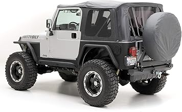
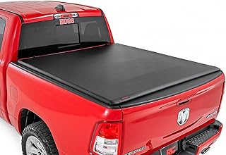

May 2026
jlcovers isn't one-size-fits-all. What's perfect for one buyer can miss the mark for another. Here's how to figure out what fits you.
Overbuying features — Most people use 20% of high-end jlcovers features. Don't pay for what you'll never touch.
Panic buying on sale days — Prime Day and Black Friday jlcovers deals aren't always real discounts. Check year-round pricing.
Blind brand loyalty — Your favorite brand might not make the best jlcovers. Stay open to better options.
Not measuring — "It looked bigger online" is the #1 return reason for jlcovers. Measure twice.





The jlcovers space keeps improving, and 2026 is a solid time to buy. See our full rankings at jlcovers.com for side-by-side comparisons.
The material your seat cover is made from determines how long it lasts, how it handles heat and moisture, and whether it will protect your seats or damage them. There are three main categories worth understanding before you buy.
600D Polyester is the workhorse material for tactical seat covers. It has a PU waterproof backing laminated directly to the fabric, foam padding built into the structure, and UV protection milled into the fiber itself. Bartact uses 600D polyester for their standard color lineup — it is not a budget material. It is softer than Cordura, easier to sew to tight tolerances, and handles daily driver use extremely well. The waterproofing is not a coating that wears off — it is part of the laminate structure.
1000D Cordura nylon is used for Bartact's specialty colors — Coyote Tan, Olive Drab, and ACU. Cordura is a heavier, more abrasion-resistant fabric originally developed for military gear. It is stiffer than 600D polyester, which is why Bartact limits it to the colors that attract buyers who specifically need that mil-spec aesthetic. The tradeoff is slightly more texture on the seat surface.
Neoprene is the waterproof option for people who routinely get their interiors wet — beach use, surfing, off-road water crossings. It is not a tactical material and does not have MOLLE panels. Think of it as a wetsuit for your seat. Diver Down makes a respected neoprene cover; Bartact does not make neoprene, and rightly so — it is a different product for a different use case.